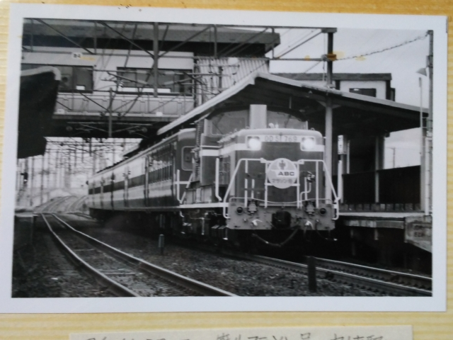
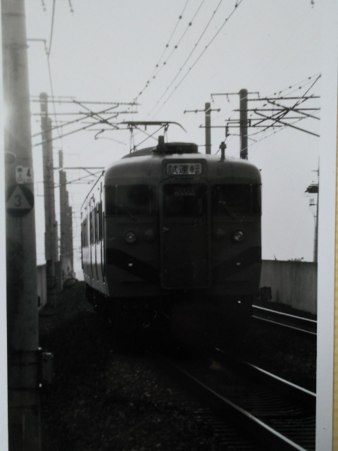
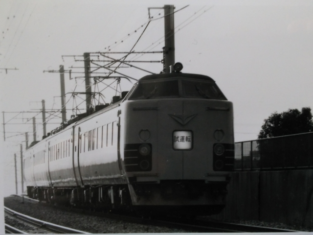
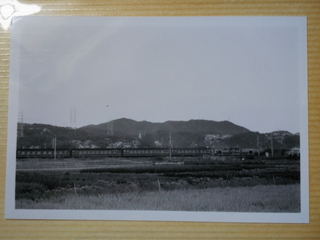
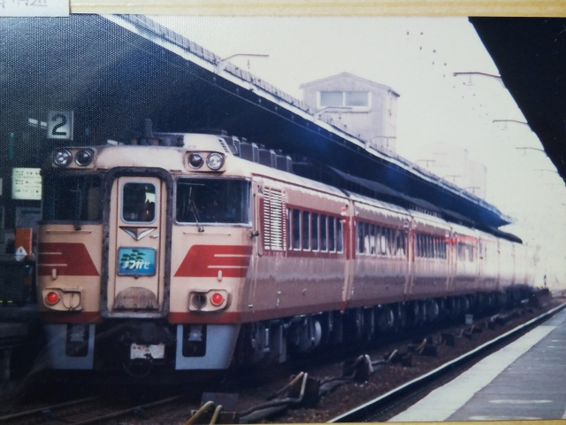
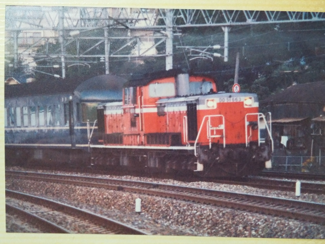
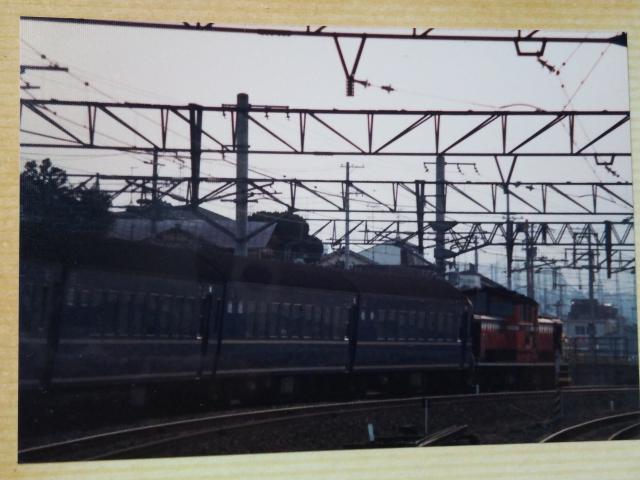
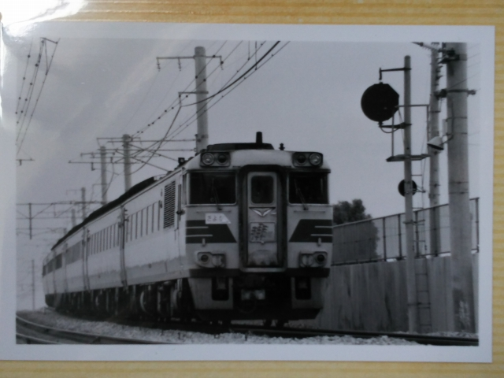
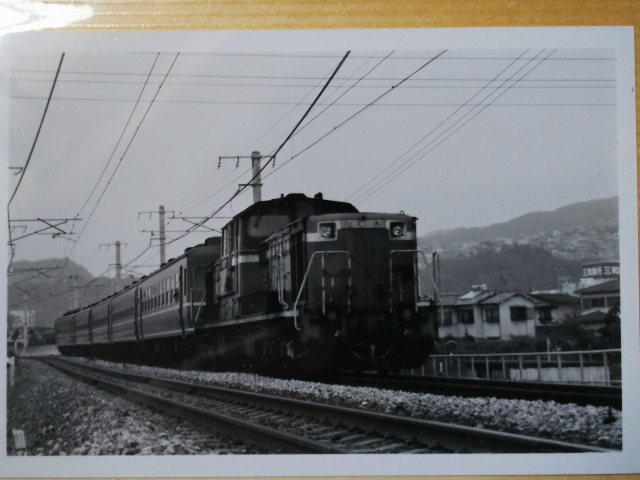
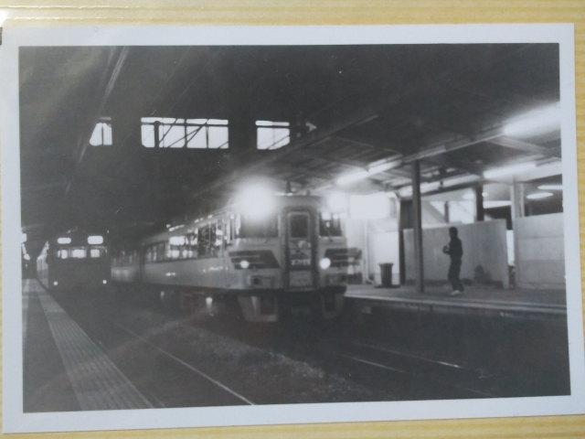

昭和６０年３月３日 篠山マラソン号 中山寺
この頃はＤＤ５１＋１２系なんて、全然いけてない
列車ですが、今となったら撮っといてよかった列車
です。
もう今は臨時列車は走らんのかな？こんなにマラソ
ン人気やのに。

昭和６１年９月３０日 試運転 中山寺
いよいよ福知山までの電化のカウントダウンの時期ですね。すでに武田尾
のあたりは新線に変わってる時期です。
白黒でよく分かりませんが、ダサい塗装だった記憶が・・・

「北近畿」の試運転ですね。
しかし、なんちゅうダサい名前の列車やねんと思っ
てました。

昭和６１年１０月６日 だいせん 中山寺
撮影記録を見ると、２０系＞まつかぜ、という感じ
やったんすね。朝の６時台のはずですが、すごい力
の入れようです。やっぱり２０系オンリーの編成は
綺麗でした。

昭和６１年１０月１２日 大阪

この１０３カナリア色も、撮っといて良かった写真
すね。１２系以上に、なんで撮ったんかわからん写
真です。

昭和６１年１０月１６日 川西池田
この頃は、12日に塚本、14日に中山寺、18日の夜に
宝塚、26日は平井車庫の近く、と２０系だいせんを
おっかけまくってます。日の出がどんどん遅くなっ
てきて、朝でもかなり厳しい感じでした。
しかし自転車でよう行ったなぁ。


昭和６１年１０月２６日 中山寺
まつかぜ３号
廃止を目前に控えて、惜別のマークらしきものがつ
いてますね。
「伝統の特急」というイメージのあったまつかぜも、
今から考えたら２５年ほどしか走ってなかったんよ
ね。

もう雑客も無くなってますね。

昭和６１年１０月３１日 まつかぜ４号
最終のまつかぜを中山寺駅でとらえた一枚です。
今思うと、この時が鉄道写真撮影に力を入れてたピ
ークですね。阪急から８１０系が去り、古き良き福
知山線が無くなった時点で、一気に熱は冷めていっ
た記憶があります。
でも、ちょうど大学受験を控えて、いいタイミング
だったのかもしれません。あのままだらだら撮影に
うつつを抜かしてたら、今のこの生活はなかったか
もしれませんから・・・